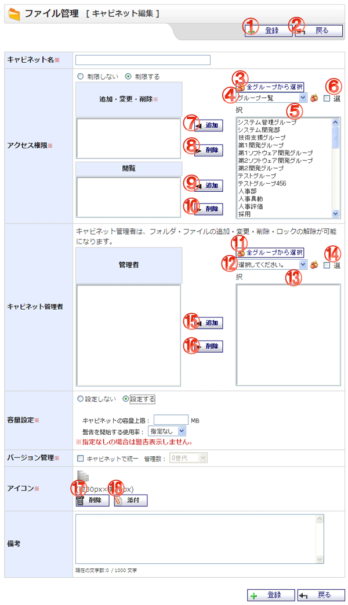

キャビネットを登録する画面です。

機能説明
登録ボタンキャビネット登録確認画面へ遷移します。 |
戻るボタン遷移元の画面へ遷移します。 |
|---|---|
全グループから選択ボタンポップアップで全グループから選択画面が開きます。 |
グループコンボグループの一覧が表示されます。 |
グループボタンポップアップでグループ選択画面が開きます。 |
選択チェックボックスアクセス権限の右側の選択グループ・ユーザリストに表示している項目を全て選択状態にします。 |
追加ボタン選択したグループ又はグループに所属するユーザを、追加・変更・削除リストに追加します。 |
削除ボタン追加・変更・削除リストで選択されているユーザ又はグループを、追加・変更・削除リストから除外します。 |
追加ボタン選択したグループ又はグループに所属するユーザを、閲覧リストに追加します。 |
削除ボタン追加・変更・削除リストで選択されているユーザ又はグループを、閲覧リストから除外します。 |
全グループから選択ボタンポップアップで全グループから選択画面が開きます。 |
グループコンボグループの一覧が表示されます。 |
グループボタンポップアップでグループ選択画面が開きます。 |
選択チェックボックスキャビネット管理者の右側の選択ユーザリストに表示している項目を全て選択状態にします。 |
追加ボタン選択したグループに所属するユーザを、管理者リストに追加します。 |
削除ボタン管理者リストで選択されているユーザを、管理者リストから除外します。 |
削除ボタン設定中の添付画像を削除します。 |
添付ボタン添付ファイル選択画面をポップアップで表示します。 |
表示・入力項目説明
キャビネット名
キャビネット名を入力します。(50文字以内)
アクセス権限
キャビネットのアクセス権限を設定します。
キャビネット管理者
キャビネットの管理者を設定します。
容量設定
キャビネットの容量を設定します。
バージョン管理
キャビネットのバージョン管理を設定します。
アイコン
キャビネットのアイコンを設定します。
備考
キャビネットの備考を設定します。(1000文字以内)